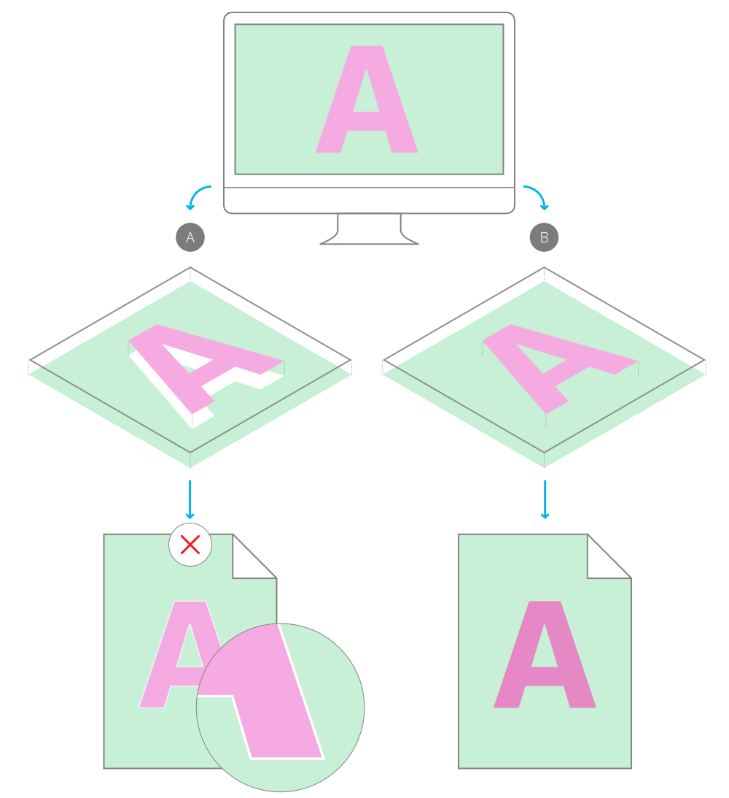

For professional printing, global colors can be made to overprint. By applying an overprint color to objects selectively you can control overprinting.
About overprinting
Overprinting means that you can print one ink color on top of another instead of, by default, the underlying color being 'knocked out' (removed). This prevents unwanted fringing being left around objects, e.g. text.

(A) Unwanted knockout behavior (default) showing white fringing vs. (B) overprinting.
As a professional printing feature, overprint works when publishing PDFs using a CMYK color space and PDF/X compatibility.
You don't need to explicitly make an overprint for black, for black text or black graphics, as this is set by default. On PDF publishing, you can control black overprinting using the Overprint black option in the Export Options panel (for any PDF export options).
To create an overprint color from scratch:
On the Swatches panel, select a Document palette from the palette pop-up menu. If no Document palette exists you can create one from the panel's Panel Preferences menu.
From Panel Preferences, select Add Global Color.
Adjust the settings in the dialog.
Select the Overprint option.
Click Add.
To make an existing global color overprint:
On the Swatches panel, -click the global color swatch's thumbnail, then select Overprint.
 To create an overprint color from scratch:
To create an overprint color from scratch: